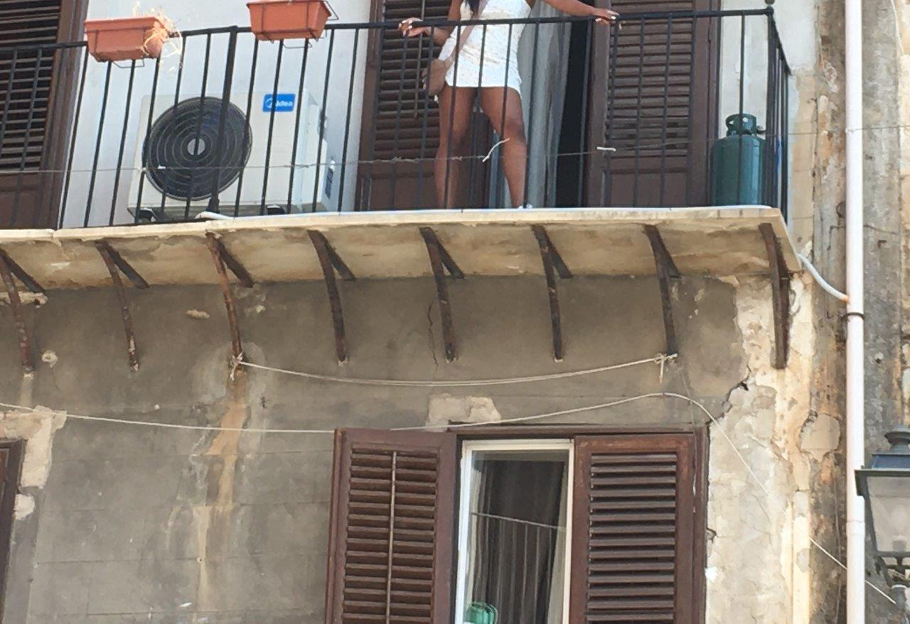

Reflection
I think travel blogs come off as too positive/rosy, and I wanted to reserve a space for some more serious, miscellaneous thoughts below. I didn't take this picture myself, but we rushed by three of the same stenciled graffiti. Seems to be an independence movement, or maybe a culture that prides itself on rebelliousness ;)
Source for this image
Don’t take for granted free public restrooms. Half of the restrooms we encountered, that we could only use because we bought food at the shop, didn’t have toilet paper. The restroom in the train station you even had to pay a quarter to get inside, like a vending machine. And in addition to having no toilet paper, that one also had no soap.
Also don’t take for granted free water. You have to pay at least $2 for it anywhere you go. It’s default sparkling or “frizzante,” which I’m actually used to because it’s all my grandma had, but my peers weren’t happy. And your expensive water doesn't even include ice because Europeans don't use it evidently.
Also, building codes! I guess the structures are old that they're grandfathered in. The building we stayed in had marble stairwells and wrought iron banisters, but it was very dirty and chipped, like shadow of former glory. Also our loft looked and creaked like the owner built it herself. You saw this crazy thin, warped balcony on my other page.

The streets were terrifying at first: not many sidewalks and cars/motorcycles that zoom by less than two feet from your body. What I realized eventually however is that I've had closer calls on my college campus. There's no way someone driving in Italy could be on their phone trying to multitask. There's too much going on around them; they're more vigilant.
When I was in the airport in Zurich during a layover, I bought a pretzel. I ordered in English, the cashier responded in English, our entire interaction was ENGLISH... until he handed me the pretzel and said, "Bye! Shalom!" I've had 8 people ask/insist that I look Arab before, which is part of why I was so interested in this trip. No one's thought I was Jewish before, but it stuck with me when we were touring the prison in the Steri where they kept Jews during the Aragonese Inquisition. While all three religious groups existed on the island in the medieval time period, the Christians and Muslims kinda teamed up to look down on the Jews, and much information about them has been lost. The surviving account we did read was from a middle class Jew from Northern Italy who was shocked that they were so impoverished in Sicily. A link to a non-academic but still fascinating article about Italian-Jewish ancestry.
I grew up in an area with a large South Asian population. Seeing the streets full of them, as well as women with my coloring (NOT blonde, not even close)... in that respect, it felt more like home than my college. A link to a very interesting UMASS article about "Indianness" in Italy. You won't find a Mexican or Chinese restaurant in Sicily, but you definitely, thankfully at least see Bengali.

Beautiful Made in India silk clothes for sale on every street corner in Palermo. They came to about $20
I prefer a pretty conservative bathing suit, two piece but not by much, with shorts. We went to the same beach in Mondello two days in a row. Both days I ordered the same cup of gelato with two flavors. The day I forgot to put on my cover-up dress before walking across the sidewalk AT THE EDGE OF THE SAND to go buy it, the grumpy Italian man charged me an extra 30 cents. I'm assuming it had to do with my clothes because he started gossiping with his coworkers, and it seemed demeaning. Our professor warned us that Italians cover up even if they're walking across the sidewalk like this, but, really?? Compared to how much skimpier the clothes can be at my college... American men pretend like they don't notice.
One of my classmates wanted to buy sweatpants because she was cold at night... well, we walked through all four stories of that massive H&M, and there was not one pair of sweats, not even a hoodie. Europeans really do dress fancier than us.
Sicily uses euros like the rest of the EU, but what's interesting is most things you buy are for whole numbers. Tax is built in, so if a cup of gelato is labeled 3€, that's what you're paying. Things don't come out to $3.67 like in America: you can actually carry around a coin purse and use your change! In fact, the shops will get mad at you if you try to buy something less than 5€ with a card instead of cash because it's more hardship/government taxes on them. You know how it'd be really weird and sketchy to pay for something in America with a $50 bill? Not weird there at all. I once bought a 4€ cannolo with a fifty euro bill. And when you pay a restuarant tips for how many people are in your party... well there's just an even "cover charge" for sitting down that everyone pays.
Source for this image
I didn't learn much Italian; that wasn't the goal of the trip. But the important words are "scusi," pronounced SKU-ZEE, to say "excuse me!" as you dart through crowds as well as "prego," pronounced PRAY-GO, which seems to be "you're welcome/go for it/no problem/pray, you go on ahead/please, after you/I'm acknowedging your existence" all in one. You're going to wish you spoke more though. A smiling elderly woman on the bus saw the piece of driftwood I took from the beach and rattled off something— all I got was "casa." High school Spanish, let's go! I did indeed bring it back to my real casa.
I flew through Frankfurt as I left, and look!!! Jewish prayer rooms!!! That's WW2 history right there!!! Can you tell I'd never been out of the country before, because all my classmates could from my excitement :)
Italy was having the wettest year on record while I was there. We were expecting wicked hot weather in the height of summer, but it was (I think pleasantly) tempered with showers a few times! And back in the states, my parents were dealing with smoke clouds from wildfires in Canada. Can we say global warming?
***I swear if you don't use Scroll to Top i'm gonna cry***
Many thanks to:
— the James Madison University Honors College and its generous donors
— Dr. Maria Harvey & Dr. Cyril Uy II
— My family :)
— W3Schools, for its open-source coding tutorials

Saint Rosalia of Palermo
Project website by a James Madison University Honors student. Legal
Copyright 2023-2024 MCL, All Rights Reserved.